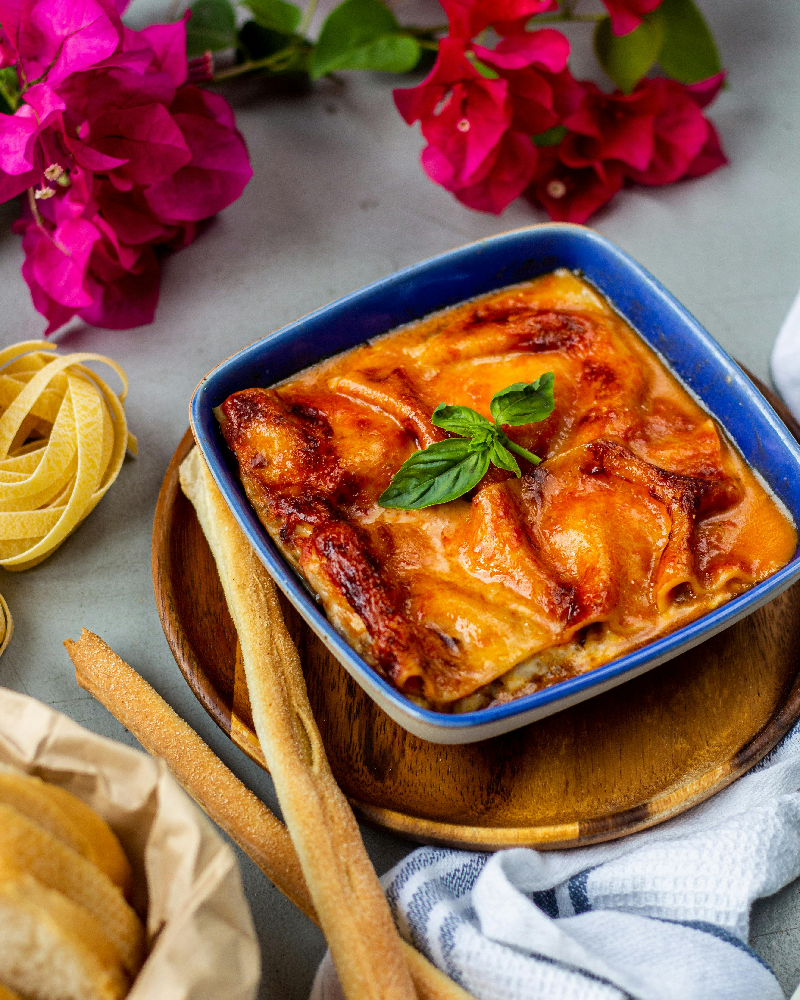

Lasagna
How to Make Lasagna

Description
For a classic Italian lasagna, start by preparing the rich meat sauce.
In a large skillet, heat olive oil over medium heat and sauté finely chopped onions, garlic, and a pinch of salt until softened.
Add ground beef (or a mixture of beef and pork for extra flavor) and cook until browned.
Stir in crushed tomatoes, tomato paste, a splash of red wine (optional), and a handful of fresh basil or dried oregano.
Simmer the sauce on low heat for at least 45 minutes to develop deep, rich flavors, then adjust seasoning with salt, pepper, and a pinch of sugar if needed to balance the acidity.
Meanwhile, make the creamy ricotta filling by mixing ricotta cheese with egg, grated Parmesan, salt, pepper, and a handful of chopped fresh parsley.
Cook the lasagna noodles according to package directions, then drain and set aside.
To assemble the lasagna, spread a thin layer of meat sauce on the bottom of a baking dish, then layer noodles, ricotta mixture, more sauce, and shredded mozzarella cheese.
Repeat the layers, finishing with a generous layer of mozzarella and Parmesan on top.
Cover with foil and bake at 375°F (190°C) for 25 minutes. Remove the foil and bake for an additional 15 minutes to brown the cheese.
Let it rest for 10 minutes before serving to allow the layers to set. Enjoy your perfect, cheesy, and hearty lasagna!
Ingredients for Lasagna
Meat Sauce
- 2 tbsp olive oil
- 1 medium onion, finely chopped
- 2-3 cloves garlic, minced
- 1 lb (450g) ground beef
- 1 can (28 oz) crushed tomatoes
- 2 tbsp tomato paste
- 1-2 tsp dried oregano or a handful of fresh basil, chopped
- Salt and pepper to taste
Ricotta Filling
- 2 cups ricotta cheese
- 1 egg
- 1/2 cup grated Parmesan cheese
- 1/4 cup fresh parsley, chopped
- Salt and pepper to taste
Lasagna Layers
- 12-15 lasagna noodles (depending on the size of your dish)
- 2-3 cups shredded mozzarella cheese
- 1/2 cup grated Parmesan cheese (for topping)
Optional
- Fresh basil or parsley for garnish
Steps to Make Lasagna
- Prepare the Meat Sauce
- Heat 2 tbsp olive oil in a large skillet over medium heat.
- Sauté 1 finely chopped onion, 2-3 minced garlic cloves, and a pinch of salt until softened (about 5 minutes).
- Add 1 lb ground beef (or a beef/pork mix) and cook until browned, breaking up the meat with a spoon.
- Stir in 1 can of crushed tomatoes and 2 tbsp tomato paste.
- Add 1-2 tsp dried oregano (or fresh basil) and season with salt and pepper to taste.
- Simmer the sauce on low heat for 45 minutes, stirring occasionally. Adjust seasoning if needed.
- Prepare the Ricotta Filling
- In a mixing bowl, combine 2 cups ricotta cheese, 1 egg, 1/2 cup grated Parmesan cheese, 1/4 cup chopped fresh parsley, and salt and pepper to taste.
- Mix until smooth and set aside.
- Cook the Lasagna Noodles
- Bring a large pot of salted water to a boil and cook 12-15 lasagna noodles according to the package instructions.
- Drain and lay the noodles flat on a sheet of parchment paper or a clean kitchen towel to prevent sticking.
- Assemble the Lasagna
- Preheat the oven to 375°F (190°C).
- Spread a thin layer of meat sauce on the bottom of a 9x13-inch baking dish.
- Place a layer of lasagna noodles over the sauce, followed by a layer of the ricotta mixture, more meat sauce, and a sprinkle of shredded mozzarella cheese.
- Repeat the layers, finishing with a generous layer of mozzarella and grated Parmesan on top.
- Bake the Lasagna
- Cover the lasagna with aluminum foil and bake for 25 minutes.
- Remove the foil and bake for an additional 15 minutes, or until the cheese is golden and bubbly.
- Rest and Serve
- Let the lasagna rest for 10 minutes before slicing to allow the layers to set.
- Garnish with fresh basil or parsley if desired, and serve hot. Enjoy!